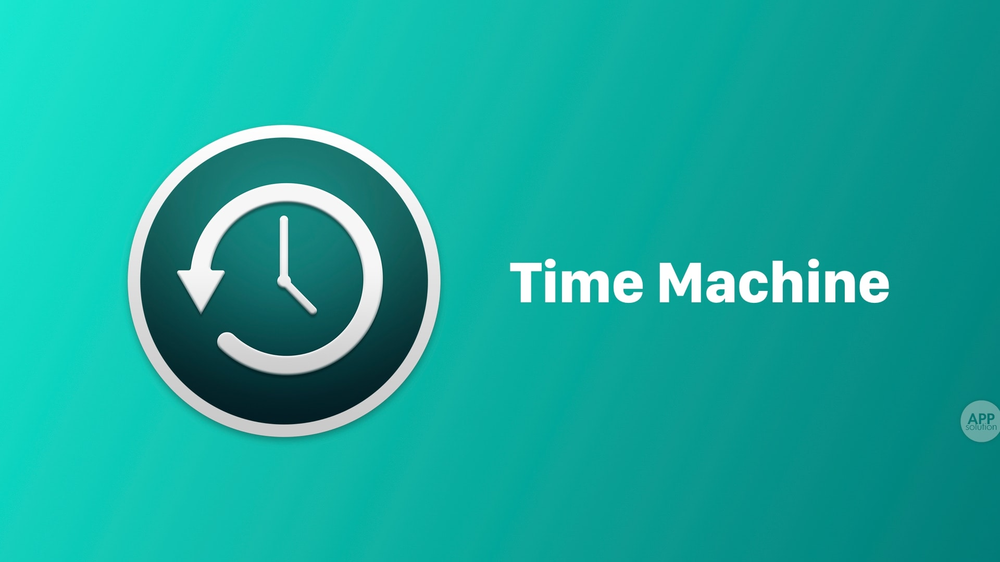
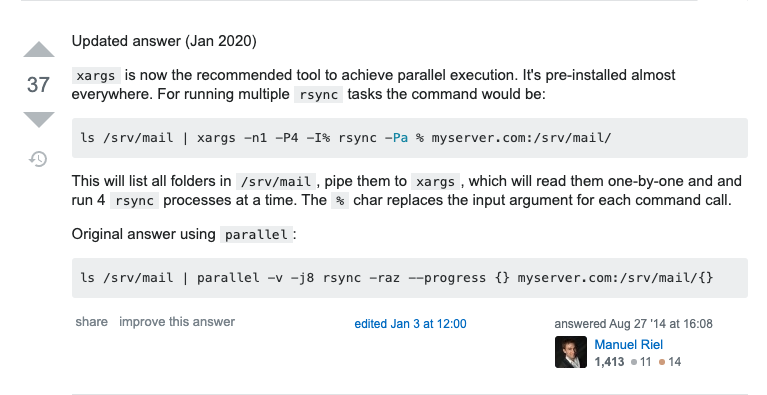

告别 scp 命令，从我做起！
rsync 命令是一个远程数据同步工具，可通过 LAN/WAN 快速同步多台主机间的文件。rsync 使用 rsync算法 使本地和远程两个主机之间的文件达到同步，这个算法只传送两个文件的不同部分，而不是每次都整份传送，因此速度相当快。

1. 使用方式
| 编号 | 含义解释 | 参数列表 |
|---|---|---|
| 1 | 本机内同步文件或目录 | rsync [OPTION] SRC DEST |
| 2 | 将本机同步到远程主机 | rsync [OPTION] SRC [USER@]host:DEST |
| 3 | 将远程主机同步到本机 | rsync [OPTION] [USER@]HOST:SRC DEST |
| 4 | 从 rsync 服务器中同步 | rsync [OPTION] [USER@]HOST::SRC DEST |
| 5 | 往 rsync 服务器中同步 | rsync [OPTION] SRC [USER@]HOST::DEST |
| 6 | 列出远程机的文件列表 | rsync [OPTION] rsync://[USER@]HOST[:PORT]/SRC [DEST] |
2. 常用参数
- [1] 文件同步属性参数
| 编号 | 参数列表 | 含义解释 |
|---|---|---|
| 1 | -a |
以递归方式并保持所有文件属性；等于 -rlptgoD |
| 2 | -r |
对子目录以递归模式处理 |
| 3 | -l |
保留软链接 |
| 4 | -L |
像对待常规文件一样对应软链接文件 |
| 5 | -p |
保持文件权限 |
| 6 | -t |
保持文件时间信息 |
| 7 | -g |
保持文件属组信息 |
| 8 | -o |
保持文件属主信息 |
| 9 | -D |
保持设备文件信息 |
| 10 | -u |
仅仅进行更新操作；不覆盖新的文件；等同于 --update |
| 11 | -P |
断点续传并显示备份过程；等同于 --partial --progress |
| 12 | -b |
创建备份；存在新文件或者目录会进行重命名；可以使用 --suffix 指定前缀；--backup |
- [2] 同步模式相关参数
| 编号 | 参数列表 | 含义解释 |
|---|---|---|
| 1 | -v/--verbose |
详细模式输出 |
| 2 | -q/--quiet |
精简输出模式 |
| 3 | -b |
创建备份，对于目的已经存在有同样的文件名时重命名 |
| 4 | --delete |
删除那些 DST 中有而 SRC 没有的文件 |
| 5 | --progress |
显示备份过程 |
| 6 | --dry-run |
查看并显示哪些文件将被传输 |
| 7 | --backup-dir |
将备份文件存放在在目录下 |
| 8 | --exclude=PATTERN |
指定排除不需要传输的文件模式 |
| 9 | --port=PORT |
指定其他的 rsync 服务端口 |
| 10 | --password-file=FILE |
从 FILE 中得到密码，需要注意权限为 600 |
| 11 | -e/--rsh=COMMAND |
指定使用 rsh 或 ssh 方式进行数据同步 |
| 12 | --existing |
仅更新那些已经存在于 DST 的文件，而不备份那些新创建的文件 |
| 13 | --files-from |
指定需要同步的文件或者目录列表文件集合 |
| 14 | --usermap=STRING |
将属主为 apache 的文件映射为 nginx 属主 |
| 15 | --groupmap=STRING |
将属组为 apache 的文件映射为 nginx 属组 |
| 16 | --bwlitmit=(kb/s) |
限制传输文件的 I/O 带宽 |
| 17 | --config=FILE |
指定其他的配置文件；默认使用 rsyncd.conf 文件 |
| 18 | --partial |
断点续传；保留那些因故没有完成传输的文件用于加快随后的传输 |
- [3] 实际使用示例和注意事项
# 常用方式
$ rsync -avz source_dir dest_dir(username@host:PATH) --exclude "*.pyc*" --delete
-v 详细输出
-a 递归方式传输文件
-z 压缩文件传输
-h 输出友好
--exclude 不包括pyc的文件
--delete 删除在源端不存在的文件，不加不会默认删除
# SSH方式是通过系统用户来进行备份
$ rsync -vzrtopg --progress -e 'ssh -p 2234' \
--delete escape@172.16.78.192:/www/data \
/databack/experiment/rsync
# 当然也是可以是用scp进行文件和目录同步的，走SSH协议传输
$ scp -r -P 55822 data.tar.gz escape@www.hello.com:/home/escape
# 排除目录或文件，注意目录路径不需要带/符号，否则排除目录不生效
# 第一个将排除data/logs及其子目录和文件，第二个只排除其子目录和文件
$ tar -zcvf data.tar.gz --exclude=data/logs data
$ tar -zcvf data.tar.gz --exclude=data/logs/nginx/* data
# 排除以txt为后缀的所有文件，包括子目录
# 注意要打包的data文件夹或文件必须在命令最后，否则不会生效
$ tar -zcvf data.tar.gz --exclude=*.txt data
# 使用ssh协议作为rsync来传输
$ rsync -avz --progress -e ssh --delete ~/ftp/pub/samba nimbus:"~ftp/pub/tridge"
# 对应ssh服务不在22端口上的情况，需要使用-p参数来指定端口
$ rsync -avz --progress -e 'ssh -p 2234' app escape@bj.baidu.com:/home/escape \
--exclude app/nginx/logs/
# 当然可以添加更多参数
$ rsync -avz -e 'ssh -o "ProxyCommand nohup ssh firewall nc -w1 %h %p"'
# 对传输进行带宽限制
$ rsync -avzh --progress --bwlimit=10000 --dry-run \
-e 'ssh -o ProxyCommand="ssh -W %h:%p root@110.110.110.110"' \
./data root@172.24.110.110:/data
# 改变映射属主属组
$ rsync -avz --progress -e ssh --usermap=apache:nginx --groupmap=apache:nginx \
data.tar.gz --exclude=*.txt data
- [4] 并发同步文件或目录(最佳实践)
# 最佳实践
--dry-run ==> rsync_files_list.txt ==> rsync
# 即先使用--dry-run参数先跑一遍将需要需要同步的文件路径都记录到txt文本
$ rsync -avz --progress -e 'ssh -p 2222' --dry-run \
/data/app/data/files/* \
escape@app.escapelife.site:/data_backup/app/files \
> /tmp/rsync_files_list.txt
# 然后对输出到txt文本的内容进行筛选，删除无用的信息，在使用rsync命令并发同步文件
$ cat /tmp/rsync_files_list.txt | xargs -n1 -P4 -I{} \
rsync -avhz --progress {} remote_server:/data

3. 注意事项
同步文件时候的坑点
- [1] 同步方式
在我们日常生活中，同步文件有以下三种模式，分别是：
- 把源路径下文件，同步到目标路径
- 目标路径将自动创建多层目录存放 nginx.conf 文件
rsync -aR /data/nginx/config/nginx.conf 192.168.1.100:/data
- 把源站某个目录，同步到目录路径
- 目标路径将自动创建多层目录存放 config 目录
rsync -aR /data/nginx/config/ 192.168.1.100:/data
- 把源站某个文件，同步到目标文件
- 不会自动穿件多目录，只是传送 nginx.conf 文件到目标文件
rsync -aR /data/nginx/config/nginx.conf 192.168.1.100:/data/backup/nginx/nginx.conf
前两种情况，目标路径最好事前创建好，不存在的话会自动创建的。第三种情况，rsync 只支持创建一层目录，也就是说可以允许 nginx 目录不存在，否则会报错的。而且需要重点注意的是，对应目标路径的 /data 不需事前存在，否则目录文件都无法创建和传送。
- [2] 使用细节
- 要使
--delete参数生效，后面源目录(a)必须已/符号结尾，目标目录则无所谓 - 参数
--exclude可以使用绝对路径，也可以使用相对路径，且使用效果是一样的 - 如使用
--exclude=data则会排除源目录(a)和目标目录(b)下所有的data目录及其文件 - 如使用
--exclude=/data则会排除源目录(a)和目标目录(b)下第一层的data目录及其文件
------------------------------------------------------------
~/MissSun/dailyTool » rsync -av --delete --exclude=data --dry-run a/ b/
building file list ... done
deleting name/log5
deleting name/
deleting files/log4
deleting files/
deleting log6
./
bin/
bin/log2
sent 122 bytes received 38 bytes 320.00 bytes/sec
total size is 0 speedup is 0.00
------------------------------------------------------------
~/MissSun/dailyTool » rsync -av --delete --exclude=/data --dry-run a/ b/
building file list ... done
deleting name/log5
deleting name/
deleting files/log4
deleting files/
deleting log6
./
bin/
bin/log2
bin/data/
bin/data/log1
sent 223 bytes received 62 bytes 570.00 bytes/sec
total size is 0 speedup is 0.00
4. 实例说明
还是那句话，光看不练假把式，哈哈哈
- [1] 备份到中央备份服务器，增量为 7 天
#!/bin/sh
# This script does personal backups to a rsync backup server. You will end up
# with a 7 day rotating incremental backup. The incrementals will go
# into subdirectories named after the day of the week, and the current
# full backup goes into a directory called "current"
# tridge@linuxcare.com
# directory to backup
BDIR=/home/$USER
# excludes file - this contains a wildcard pattern per line of files to exclude
EXCLUDES=$HOME/cron/excludes
# the name of the backup machine
BSERVER=owl
# your password on the backup server
export RSYNC_PASSWORD=XXXXXX
########################################################################
BACKUPDIR=`date +%A`
OPTS="--force --ignore-errors --delete-excluded --exclude-from=$EXCLUDES \
--delete --backup --backup-dir=/$BACKUPDIR -a"
export PATH=$PATH:/bin:/usr/bin:/usr/local/bin
# the following line clears the last weeks incremental directory
[ -d $HOME/emptydir ] || mkdir $HOME/emptydir
rsync --delete -a $HOME/emptydir/ $BSERVER::$USER/$BACKUPDIR/
rmdir $HOME/emptydir
# now the actual transfer
rsync $OPTS $BDIR $BSERVER::$USER/current
- [2] 备份到备用磁盘
#!/bin/sh
export PATH=/usr/local/bin:/usr/bin:/bin
LIST="rootfs usr data data2"
for d in $LIST; do
mount /backup/$d
rsync -ax --exclude fstab --delete /$d/ /backup/$d/
umount /backup/$d
done
DAY=`date "+%A"`
rsync -a --delete /usr/local/apache /data2/backups/$DAY
rsync -a --delete /data/solid /data2/backups/$DAY
- [3] 在家自动备份
#!/bin/sh
cd ~susan
{
echo
date
dest=~/backup/`date +%A`
mkdir $dest.new
find . -xdev -type f \( -mtime 0 -or -mtime 1 \) -exec cp -aPv "{}"
$dest.new \;
cnt=`find $dest.new -type f | wc -l`
if [ $cnt -gt 0 ]; then
rm -rf $dest
mv $dest.new $dest
fi
rm -rf $dest.new
rsync -Cavze ssh . samba:backup
} >> ~/backup/backup.log 2>&1
- [4] 花式备份远程文件列表
rsync -avR remote:'`find /home -name "*.[ch]"`' /tmp/
5. 常见错误
出错不可怕，害怕的是不知道怎么解决
- [1] 切换目录报错
# 报错信息
@ERROR: chroot failed
rsync error: error starting client-server protocol (code 5) at main.c(1522) [receiver=3.0.3]
# 大致原因
服务器端的目录不存在或无权限，创建目录并修正权限可解决问题
- [2] 需要用户认证
# 报错信息
@ERROR: auth failed on module tee
rsync error: error starting client-server protocol (code 5) at main.c(1522) [receiver=3.0.3]
# 大致原因
服务器端该模块tee需要验证用户名密码，但客户端没有提供正确的用户名密码认证失败，提供正确用户名和密码即可
- [3] 指定模块不存在
# 报错信息
@ERROR: Unknown module 'tee_nonexists'
rsync error: error starting client-server protocol (code 5) at main.c(1522) [receiver=3.0.3]
# 大致原因
服务器不存在指定模块，提供正确的模块名或在服务器端修改成你要的模块以解决问题
- [4] 密码权限问题
# 报错信息
password file must not be other-accessible
continuing without password file
Password:
# 大致原因
这是因为rsyncd.pwd或rsyncd.secrets的权限不对，应该设置为600
- [5] 防火墙限制
# 报错信息
rsync: failed to connect to 218.107.243.2: No route to host (113)
rsync error: error in socket IO (code 10) at clientserver.c(104) [receiver=2.6.9]
# 大致原因
对方没开机、防火墙阻挡、通过的网络上有防火墙阻挡，都有可能
关闭防火墙，其实就是把tcp和udp的873端口打开，当然也可以添加防火墙规则
- [6] 配置文件有误
# 报错信息
@ERROR: access denied to www from unknown (192.168.1.123)
rsync error: error starting client-server protocol (code 5) at main.c(1524) [Receiver=3.0.7]
# 大致原因
很有可能是因为没有在hosts allow后面添加另一个IP段，重新启动rsync服务
hosts allow = 192.168.1.0/24 192.168.2.0/24
- [7] 同步软连接
# 报错信息
@ERROR: daemon security issue -- contact admin
rsync error: error starting client-server protocol (code 5) at main.c(1530) [sender=3.0.6]
# 大致原因
同步的目录里面有软连接文件，需要服务器端的/etc/rsyncd.conf打开use chroot = yes，掠过软连接文件
- [8] 服务没有正常启动
# 报错信息
rsync: read error: Connection reset by peer (104)
rsync error: error in rsync protocol data stream (code 12) at io.c(794) [receiver=3.0.2]
# 大致原因
1.很大可能是服务器端没有开启rsync服务，开启服务
2.未启动xinetd守护进程，使用service xinetd start命令来启动
- [9] 文件加锁限制
# 报错信息
@ERROR: failed to open lock file
rsync error: error starting client-server protocol (code 5) at main.c(1495) [receiver=3.0.2]
# 大致原因
配置文件rsync.conf中添加 lock file = rsyncd.lock 即可解决
- [10] 磁盘空间不足
# 报错信息
rsync: recv_generator: mkdir "/teacherclubBackup/rsync……" failed: No space left on device (28)
*** Skipping any contents from this failed directory ***
# 大致原因
磁盘空间满了，需要释放一些空间在备份
- [11] 域名反解析异常
# 报错信息
2018/12/06 04:00:42 [16950] params.c:Parameter() - Ignoring badly formed line in config file: ignore errors
2018/12/06 04:00:52 [16950] name lookup failed for 1.x.x.51: Temporary failure in name resolution
2018/12/06 04:00:52 [16950] connect from UNKNOWN (1.x.x.51)
2018/12/06 04:00:52 [16950] rsync denied on module app1_backup from UNKNOWN (1.x.x.51)
# 大致原因
上述报错不影响同步文件的正常使用，只是会出现较长时间的延迟
第一行，可以通过去掉配置文件中的"ignore errors"注释来忽略掉一些无关的IO错误
剩余行，rsync服务端对连接进来的客户端的IP地址进行域名反查，导致了延时的出现
在rsync3.10.x版本以后，rsync提供了禁用反向搜索的配置项"reverse lookup = no"
但对于早期的版本不支持禁用反向搜索功能，可以在服务端的/etc/hosts文件中配置客户端的IP和主机名
通过配置"192.168.0.30 www.escapelife.site"之后，重启服务可以降低延时
- [12] 远程地址文件和本地链接文件冲突
# 报错信息
could not make way for new symlink: system/nrcalc
rsync error: some files could not be transferred (code 23) at main.c(692)
# 大致原因
原因是因为，远程服务器上面的对应的文件是一个目录文件且是有内容的，但是本地的对应文件是一个链接文件
这就导致同步的时候，工具不知道如何处理了，所以报错了
可以使用--force或者--delete参数，强制对其进行处理，删除远程服务器的对应目录文件，即可